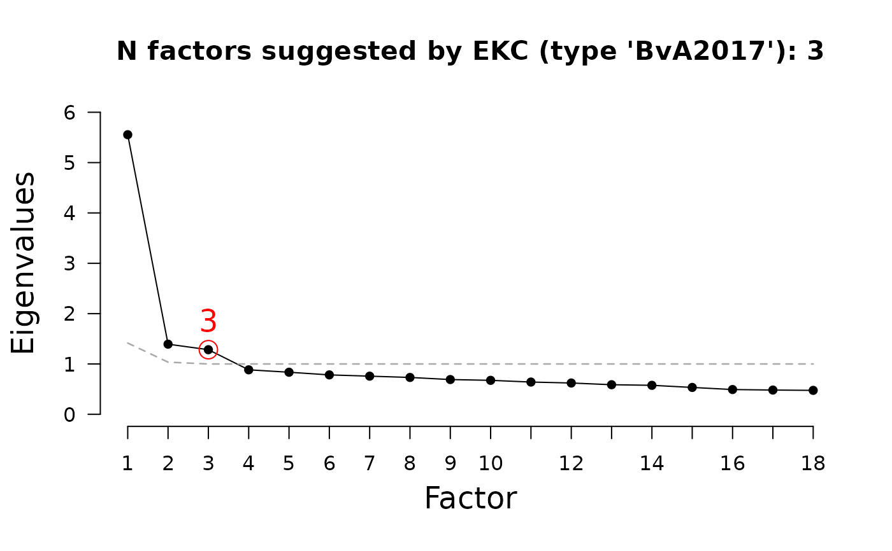

The empirical Kaiser criterion incorporates random sampling variations of the
eigenvalues from the Kaiser-Guttman criterion (KGC; see Auerswald & Moshagen
, 2019; Braeken & van Assen, 2017). The code is based on Braeken & van Assen, (2017) and on Auerswald and Moshagen
(2019).
Auerswald, M., & Moshagen, M. (2019). How to determine the number of factors to retain in exploratory factor analysis: A comparison of extraction methods under realistic conditions. Psychological Methods, 24(4), 468–491. https://doi.org/10.1037/met0000200
Braeken, J., & van Assen, M. A. (2017). An empirical Kaiser criterion. Psychological Methods, 22, 450 – 466. http://dx.doi.org/10.1037/met0000074
Caron, P.-O. (2025). A Comparison of the Next Eigenvalue Sufficiency Test to Other Stopping Rules for the Number of Factors in Factor Analysis. Educational and Psychological Measurement, Online-first publication. https://doi.org/10.1177/00131644241308528
Zwick, W. R., & Velicer, W. F. (1986). Comparison of five rules for determining the number of components to retain. Psychological Bulletin, 99, 432–442. http://dx.doi.org/10.1037/0033-2909.99.3.432
data.frame or matrix. data.frame or matrix of raw data or matrix with correlations.
numeric. The number of observations. Only needed if x is a correlation matrix.
character. Passed to stats::cor if raw
data is given as input. Default is "pairwise.complete.obs".
character. Passed to stats::cor.
Default is "pearson".
character. The calculation of EKC. type "BvA2017" is the original implementation; type "AM2019" differs from the original implementation but was used in simulation studies (Auerswald & Moshagen, 2019; Caron, 2025). See details.
Use type = c("BvA2017", "AM2019") for both implementations. Make sure
to report which version you used.
A list of class EKC containing
A vector containing the eigenvalues found on the correlation matrix of the entered data.
The number of factors to retain according to the original empirical Kaiser criterion by Braeken and van Assen (2017).
The number of factors to retain according to the adapted empirical Kaiser criterion by Auerswald and Moshagen (2019).
The reference eigenvalues.
A list with the settings used.
The Kaiser-Guttman criterion was defined with the intend that a factor
should only be extracted if it explains at least as much variance as a single
factor (see KGC). However, this only applies to population-level
correlation matrices. Due to sampling variation, the KGC strongly overestimates
the number of factors to retrieve (e.g., Zwick & Velicer, 1986). To account
for this and to introduce a factor retention method that performs well with
small number of indicators and correlated factors (cases where the performance
of parallel analysis, see PARALLEL, is known to deteriorate)
Braeken and van Assen (2017) introduced the empirical Kaiser criterion in
which a series of reference eigenvalues is created as a function of the
variables-to-sample-size ratio and the observed eigenvalues.
Braeken and van Assen (2017) showed that "(a) EKC performs about as well as parallel analysis for data arising from the null, 1-factor, or orthogonal factors model; and (b) clearly outperforms parallel analysis for the specific case of oblique factors, particularly whenever factor intercorrelation is moderate to high and the number of variables per factor is small, which is characteristic of many applications these days" (p.463-464).
In EFAtools version <= 0.5.0 only the implementation of Auerswald and
Moshagen (2019) was implemented (now available with
type = "AM2019"). However, this implementation, that was probably also used in Caron (2025), differs from the
original implementation by Braeken and van Assen (2017) in that it corrects by the reference values, i.e., without
using the empirical eigenvalues used in the original implementation.
Thanks to Luis Eduardo Garrido for pointing this out and to Johan Braeken for sharing
sample code, based on which the original version is now implemented and used
by default with type = "BvA2017".
While the adapted version performed relatively well in the simulation studies by Auerswald and Moshagen (2019) and Caron (2025), the theoretical derivations of the EKC as introduced by Braeken and van Assen (2017) may no longer hold. Currently we are unaware of studies comparing the two implementations, but based on our own brief comparisons across multiple datasets, the two implementations appear to often differ substantially regarding the number of factors suggested.
As both implementations exist in different packages and studies, we provide both versions here. Be sure to state clearly which version you use when reporting your results to avoid confusion and ensure reproducibility.
The EKC function can also be called together with other factor
retention criteria in the N_FACTORS function.
# original implementation
EKC(test_models$baseline$cormat, N = 500)
#> ── Number of factors suggested by EKC ──────────────────────────────────────────
#>
#> • Original implementation (Braeken & van Assen, 2017): 3
#> ℹ Different implementations of EKC exist. Make sure to report which one you relied on (see EKC help page for details)
